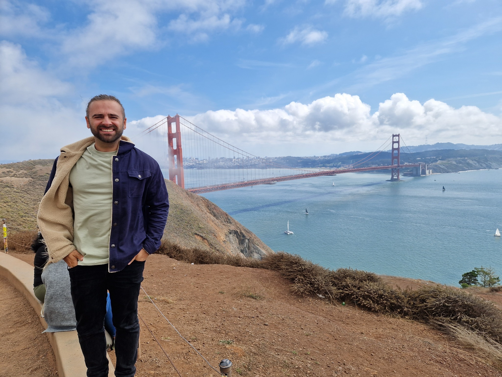

I work across embedded computing, AI/ML, hardware acceleration, automotive, energy storage and safety-critical systems.
I’m a Firmware / Embedded Systems Engineer and technical leader with 15+ years of research and industry experience. I enjoy connecting low-level hardware behaviour, algorithms and system architecture to solve practical engineering problems.

San Francisco Bay Area, California — during my two-year international assignment.
CAREER / PROGRESSION
From research to technical leadership.
My career has moved between hands-on embedded engineering, research, software team leadership and system-level ownership across automotive and energy products.
MAY 2025 — PRESENTSAN FRANCISCO BAY AREA → UK
Staff Firmware Engineer
Lunar Energy
I lead BMS firmware architecture, algorithm development and system integration for next-generation energy storage platforms. My remit spans advanced battery state estimation and thermal models, inverter and power-conversion firmware, functional-safety concepts, AI/ML-based battery analytics, and technical alignment across firmware, hardware, systems, validation and product teams.
BMS architecture and SOC, SOH, SOP and thermal estimation
Inverter firmware and power-conversion system development
Functional safety, technical safety concepts and engineering mentorship
JUN 2023 — MAY 2025SAN FRANCISCO BAY AREA
Senior Firmware Engineer
Lunar Energy
I led BMS algorithm development and software implementation, developed battery-modelling approaches for integration into ESS products, and designed the architecture for BMS deployment and end-to-end testing. I also contributed to functional-safety methods and research into AI applications for the next generation of energy storage.
Battery-model integration and BMS software delivery
Deployment architecture and end-to-end verification
Cross-functional engineering on safety and next-generation ESS
JUN 2022 — JUN 2023WARWICK, ENGLAND
Embedded Software Team Leader
Eatron Technologies
I led the embedded software team developing safety-critical, automotive-grade BMS software. My contribution combined AUTOSAR-based real-time architecture, ISO 26262 and ASPICE-aligned development, AI-based BMS algorithms, collaboration with international team leads, and growing the team’s technical capability while supporting departmental management.
Embedded team leadership and technical direction
AUTOSAR architecture, ISO 26262 and ASPICE practices
Team development and cross-site technical collaboration
APR 2019 — JUN 2022WARWICK, ENGLAND
Senior Embedded Software Engineer
Eatron Technologies
I developed embedded software for high- and low-voltage battery systems, including BMS algorithms using reinforcement learning and supervised learning. I also worked on ISO 26262 functional-safety software, cybersecurity integration without a hardware security module, and embedded architecture for AUTOSAR-compliant systems.
EV BMS embedded software and AI algorithm development
Safety-critical implementation and cybersecurity integration
Architecture for automotive real-time platforms
JAN 2015 — APR 2019OXFORD, ENGLAND
Embedded Software Engineer
Zeta Technova
I developed embedded software for automotive all-wheel-drive electronic control units and built a Vehicle-in-the-Loop test platform using NI LabVIEW. My work also covered embedded software across automotive and solar products, solar-harvesting and LED-driving algorithms, and a visible-light-communication system for solar-powered road studs.
AWD ECU firmware and Vehicle-in-the-Loop testing
Multi-MCU embedded development and toolchains
Solar energy harvesting, LED control and visible-light communication
SEP 2013 — JAN 2015BELFAST, NORTHERN IRELAND
Systems Verification Engineer
Schrader Electronics
I verified automotive-grade tyre-pressure monitoring systems across embedded software and complete-system behaviour. I created test methods, executed vehicle-level system testing, and independently verified software functionality—building a rigorous foundation in evidence-led validation.
TPMS system verification and embedded software testing
Vehicle-level integration and test-method development
Independent verification of software functionality
MAR 2011 — AUG 2012NEWCASTLE-UPON-TYNE
Engineering Research Assistant
Newcastle University
I researched heterogeneous asynchronous FPGA architectures and simulation using Xilinx ISE. I evaluated and adapted tools for heterogeneous reconfigurable-computing architectures, including energy-aware design under uncertain power sources and asynchronous computational loads.
FPGA architecture design and simulation
Reconfigurable-computing tool evaluation and adaptation
Energy-aware and asynchronous computation research
APR 2016 — APR 2021OXFORD, ENGLAND
PhD — Intelligent Transport Systems
Oxford Brookes University
Alongside my industry career, I completed doctoral research on self-driving vehicles using reinforcement learning, focused on connected and automated vehicle-enabled traffic-intersection control.
SEP 2010 — JUN 2013NEWCASTLE-UPON-TYNE, ENGLAND
BEng (Hons) — Electronic Engineering
Newcastle University
I completed my undergraduate degree in Electronic Engineering, building the foundations in electronics and engineering that underpin my later work across embedded systems, control and intelligent machines.
2004 — 2011TURKEY
Naval Academy Cadet — High School & University Years
Turkish Naval Forces · Naval Academy
I spent these formative years as a cadet within the Naval Forces education system, combining high-school and university-level study with a structured environment focused on discipline, responsibility, teamwork and leadership.
01
Embedded firmware
C, C++, Python, ARM Cortex-M, Infineon AURIX/XMC, TI, NXP and other MCU families. Device drivers, real-time systems, memory management, interrupt handling, DMA, ADC, PWM, timers and hardware abstraction.
BMS, BESS/ESS, SoC, SoH, SoE, SoP, RUL, battery modelling, EKF/state estimation, thermal modelling and power conversion.
08
Debugging & development tools
Lauterbach TRACE32, Vector CANoe/CANalyzer, Green Hills MULTI, Keil µVision, Xilinx ISE, MPLAB X, LPCXpresso, SWD and hardware debugging.
09
Safety-critical engineering
ISO 26262, ASPICE, functional safety, safety architecture, technical safety concepts and automotive-grade software development.
I’ve worked both as a hands-on individual contributor and a technical leader, combining low-level firmware development with system architecture, algorithm development, AI/ML research and cross-functional engineering.
Throughout my career, I’ve focused on bridging hardware and software — from transistors, memory, peripherals and microcontrollers, through real-time firmware and control algorithms, to FPGA/GPU acceleration and modern AI systems.